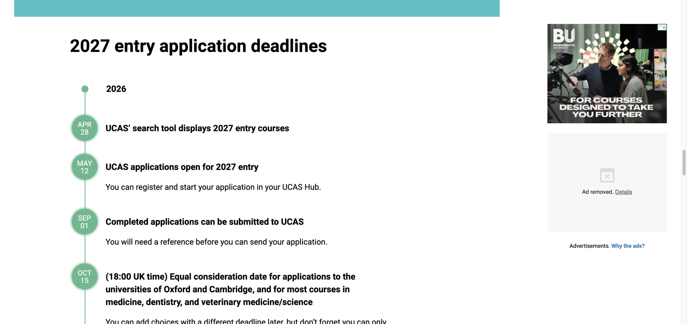
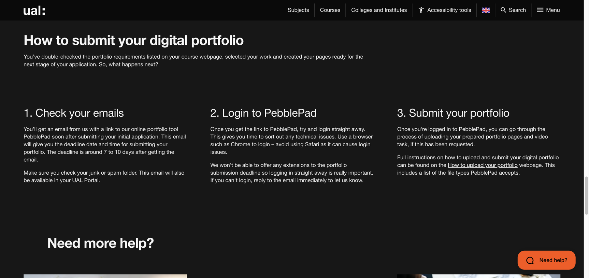

我搜索2027英国艺术留学时间线时，看到不少文章还在沿用2026年的1月14日。UCAS官网已经把2027入学的大多数本科课程平等审理截止时间写成了1月13日，英国时间18点。相差一天通常不会改变申请结果，它能帮人判断眼前这篇攻略有没有更新。
只盯着1月13日也会出问题。英国艺术本科申请有两条时间在同时走。UCAS收申请材料，院校随后收作品集或安排额外任务。推荐人、学校内部审核和语言考试又各有自己的节奏。申请人如果等个人陈述写完才开始整理作品集，后面几个月会很挤。
本文以2027英国本科申请为主。硕士课程通常由院校直接受理，各专业的轮次和作品集要求差异较大，需要到课程页面单独核对。
先把UCAS的外框钉住
UCAS当前页面列出的2027入学安排很清楚。课程搜索在2026年4月28日显示新一届课程，5月12日可以开始申请，9月1日起可以正式提交。大多数本科课程的平等审理截止时间落在2027年1月13日。这些日期只是外框。

平等审理意味着在这一时间前按要求提交的申请会得到正常考虑。它不保证录取，也不要求每个人拖到最后一晚。学校或机构可能设一个更早的内部截止时间，用来检查成绩、推荐信和申请内容。走学校通道的人先问清楚。
艺术课程还要再查一遍课程页面。部分专业会要求面试、短视频或额外任务。牛津、剑桥及医学等课程的10月15日安排也在UCAS页面上，普通艺术设计本科通常走1月的主截止时间，具体课程仍以搜索结果和院校说明为准。
UAL的作品集窗口可能只有七至十天
UAL公开说明写明，申请人提交初始申请以后，学校会发来PebblePad链接和作品集截止时间。这个截止时间通常在收到邮件后的七至十天左右。邮件也会出现在UAL Portal，垃圾邮件文件夹同样要检查。

七至十天够上传，不够从头做完一本作品集。时间很紧。提交UCAS以前，作品集至少要进入可以删减和改版的状态；项目内容还没有定，学校邮件一到，格式转换、图片压缩和课程定制作业会把这几天迅速占满。
UAL还提醒申请人尽快登录PebblePad，Safari可能带来登录问题，学校不会因为登录晚而延长提交时间。别拖。最后一周应当留给上传测试和最终核对，它不属于创作时间。
从现在排到2027年1月
现在是2026年8月下旬。UCAS申请已经可以填写，正式提交要等到9月1日。现在还来得及，作品集和申请材料从今天起要同时走。
8月下旬至9月中旬
把目标课程放进一张要求表，逐项记录页数、文件大小、额外任务和提交方式。推荐人要在这一阶段确认，成绩单与翻译件也开始准备。
作品集先做盘点。给每个项目标出完成度和缺少的证据。核心项目如果还停在概念阶段，先把它推到可以测试的版本。
9月中旬至10月底
完成主要项目的研究、原型和测试。个人陈述进入第二版，里面提到的兴趣应当能在作品集里找到对应证据。
想提前提交UCAS可以做，但先检查学校内部截止时间。提交越早，随后收到作品集任务的时间也可能越早，文件要跟得上。
11月
把项目从工作文件改成申请版本。每页只留一个主要任务，英文说明要短，读者能看懂设计决定从哪里来。
这一阶段安排一次完整模拟提交。把PDF放到另一台设备打开，检查文字大小、图片清晰度和链接限制。
12月
为不同课程调整项目顺序和篇幅。推荐信、成绩与UCAS内容做最后核对。语言考试仍未达到目标的人，需要给下一次考试和送分留出时间。
圣诞假期前把主要问题解决。院校和推荐人在假期里的回复速度会慢下来，这段时间适合润色文件，不适合等待关键材料。
2027年1月上旬
把1月13日当作系统边界，把个人截止时间放到它前面至少一周。英国时间和北京时间有时差，没必要把换算和网络状况留到最后。
提交以后每天检查邮箱、垃圾邮件和院校Portal。作品集链接、面试通知和额外任务都可能从这里来。
作品集和语言怎样抢时间
作品集最吃连续时间，语言最吃稳定频率。两者很难完全错开。前几个月只做作品集，临近申请才重新捡起考试，后面的安排会被压得很窄。可以给作品集留成块的半天，语言放进每天能保持的时段。
一周时间有限时，先保护核心项目的制作和测试。语言练习可以切成小块，模型制作、拍摄和用户测试很难切碎。到了11月，作品集重心转向编辑，语言才更容易增加整段练习。
学校官网没有公布统一作品集截止日时，不要用中介文章里的日期替代。课程页面和申请邮件是当前申请人的依据，公开攻略只能帮你安排准备顺序。
一张表应该放哪些东西
课程名称、申请层级、作品集数量或页数、文件格式、视频与额外任务。
UCAS状态、个人陈述、成绩单、推荐人确认时间和学校内部截止日。
项目当前阶段、缺少的过程证据、英文说明、拍摄与压缩检查。
院校邮件日期、Portal入口、作品集截止时间、面试安排和回复状态。
时间表做得再漂亮，也替代不了每周产出。每周只写三件必须交付的东西会更好用，例如完成一次用户测试、整理一个项目的过程页、让推荐人确认材料。任务写成继续做作品集，到了周末很难判断到底做完了什么。
核对来源
- UCAS大学申请日期与截止时间，访问于2026年8月25日
- UAL作品集建议与提交流程，访问于2026年8月25日